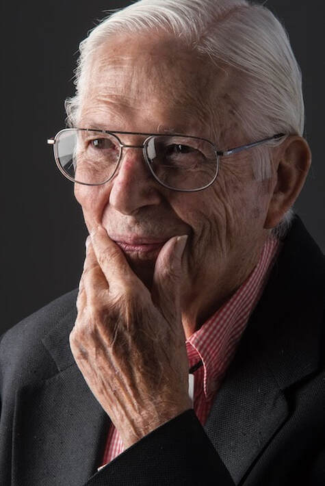

James O. Milmoe
Photographer, 1927 to 2022

James O. Milmoe was a distinguished photographic artist whose work is represented in numerous museum, private, and corporate collections. He was also internationally recognized for his exceptional photography of fine art, including paintings and sculpture.
A renowned and internationally recognized photographer died peacefully in his home on Dec. 27, 2022. He was 95. Jim's photographs have appeared in nearly 500 publications and reside in the permanent collections of Carnegie, Chicago, New York MOMA and Denver museums. He taught photography at DU, CU and UC Berkeley. His celebrated career culminated in 2022 with the publication of The Art of Grave Markers, and an exhibit at the Cactus Club in Denver. Born in Pittsburgh, Jim is predeceased by his wife of 62 years, Marilynn, a writer who shared his love of art and photography. He is survived by five children, twelve grandchildren, and four great grandchildren.
Relaunch
A new jamesomilmoe.com is in progress.
Contact
For prints, the book or questions about the archive, write to .